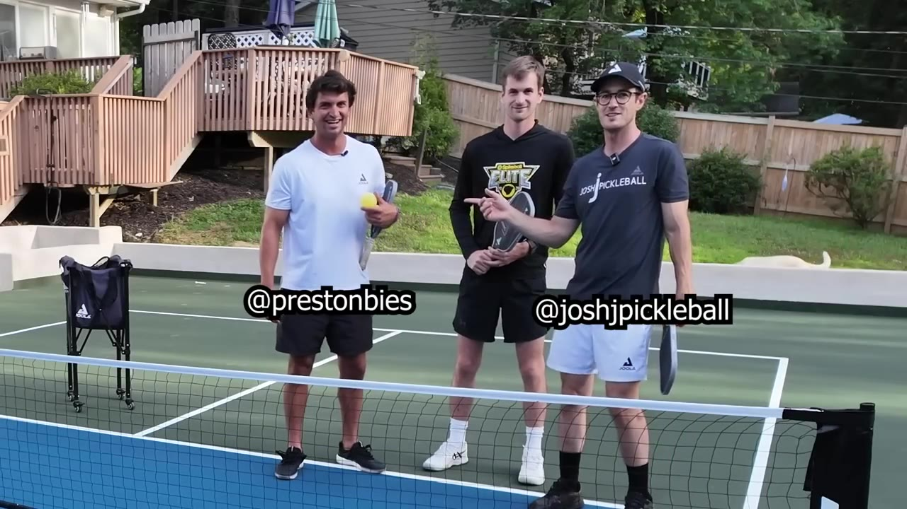
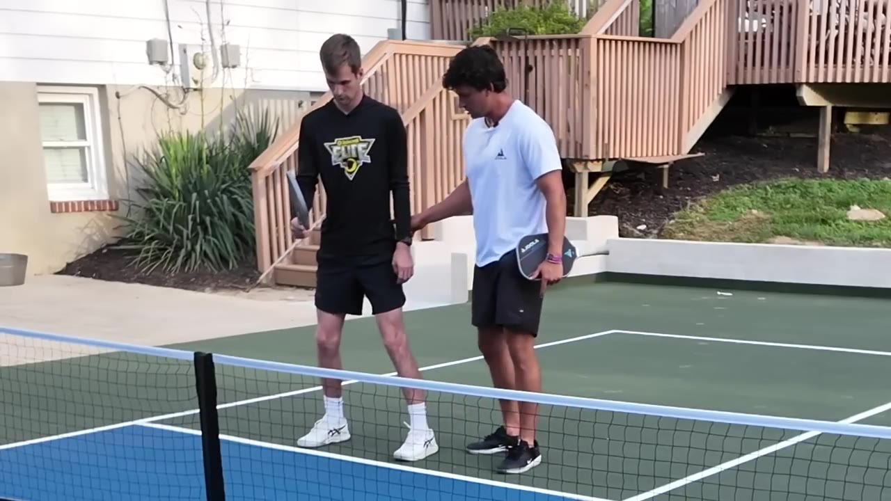
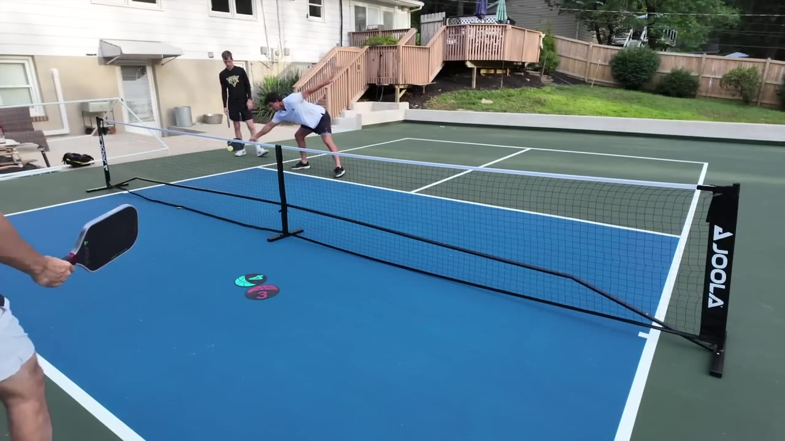
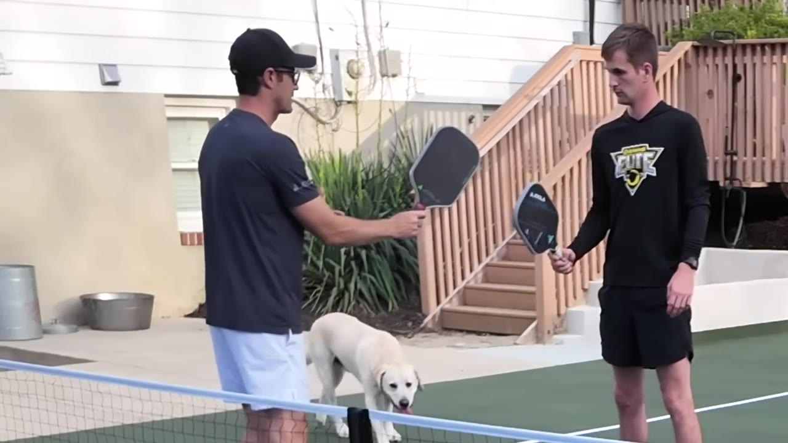
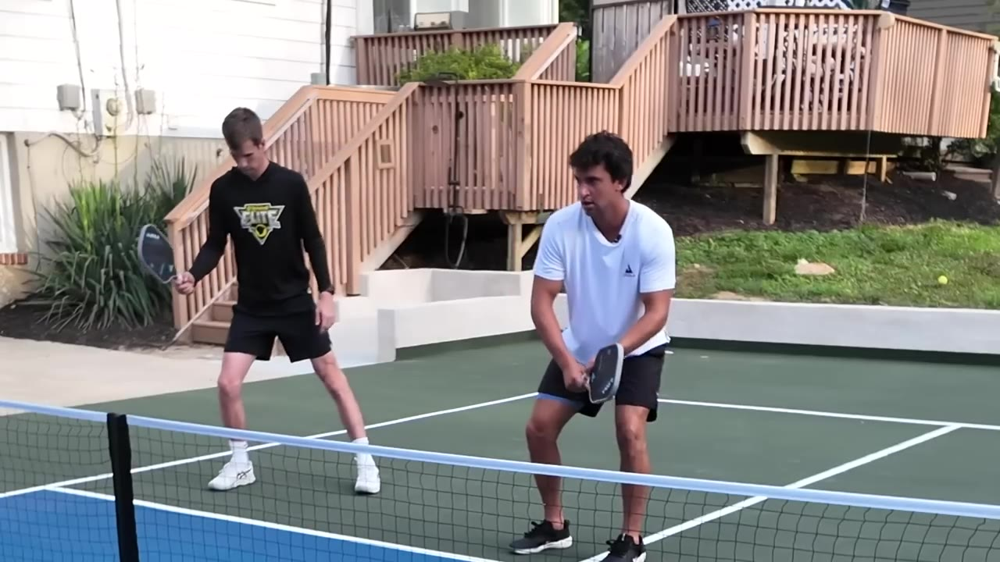
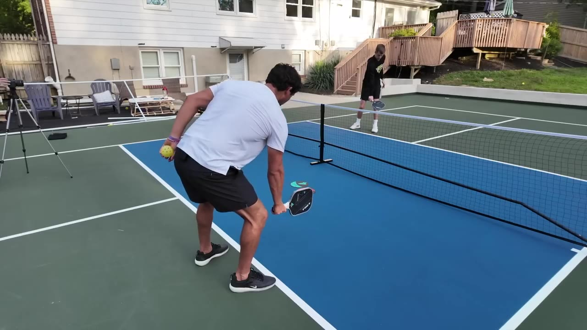
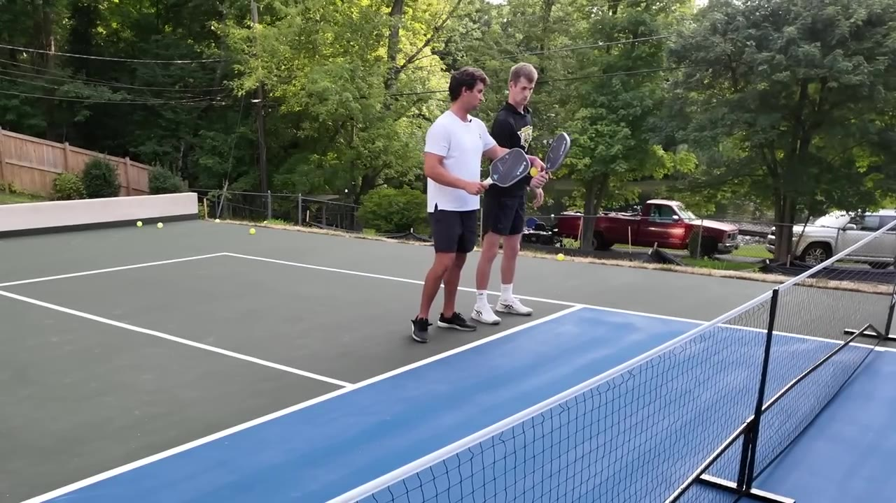
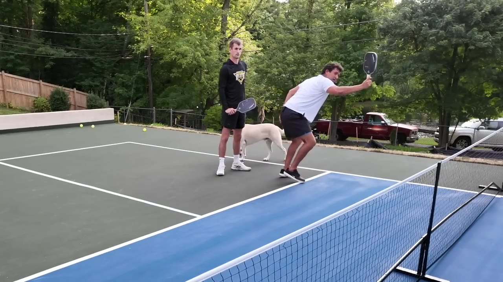

Josh and Preston take a 4.5-ish player through soft-game fundamentals in one rapid-fire court session. The through-line is a single idea — "two and through" — and a string of feel cues to make it stick.
Watch on YouTubeJosh and Preston pull in a player they've just met — Caleb, a former Spikeball standout and Josh's old doubles partner — and run a full soft-game lesson on him. He's been playing about a year and calls himself a 4 or 4.5. The plan is to dink with him, find the leaks, and fix them one cue at a time.

The spine of everything that follows. Get the paddle below the ball with the face open — that's the "two" — then push straight through to a target. No curving the ball, no opening the face through impact. Caleb's habit is to arrive late and try to open it on the way through; the fix is to be set and open first, then pull across.
The whole two process is literally getting to it, setting early, through to target.— Josh
When Caleb gets pulled wide he goes "down and wide and cutting" — he lengthens his leg, his hip drops back, his weight falls backwards, and he's late. The cue is to condense everything toward one peak athletic stance, like a triangle, so both legs stay engaged and he can spill and adjust into the ball instead of away from it.

A second, related leak: Caleb hits and stays a beat behind, weight still back, so a ball into his left foot jams him. The fix is to hit the shot, reset the feet, and be already loaded for the next one — not re-engaging from a dead stance every time.

Go there, reset here, then I can move and take it. If your weight's still back, I have nothing to push off of.— Josh
Caleb's Spikeball background is the teaching shortcut here. In Spikeball there's no string to grip the ball, so the paddle face has to be in the right position before contact and held there. Same in pickleball: get the head below the ball early, point the face at your own face, and you don't need to add loft on the way through — you just maintain the angle.

By the time it bounces I should already be here, as if the ball is just going to bounce and hit my paddle.— Josh
When you get pulled out wide, the answer isn't a perfect knifing dink that barely clears the net — that gives you no time to recover. Soft and high does. Hitting it a little higher actually buys time to get back into position. Caleb's reflex is to answer a good dink with a better dink; that's playing low margins. The coaches play high.
You're trying to hit a good dink and you're trying to hit a better dink — eventually you're just playing low margins. I'm playing high margins.— Josh
A framework Josh picked up teaching alongside Collin Johns: the sum of two dinks always equals three. An aggressive dink is a two; a soft, defensive dink is a one. So if your opponent hits a two, you can only look to hit a one back — you can't go two-plus-two. If they give you a soft one, that's when you take a two. There are 1.5s and everything in between; the point is to gauge whether the incoming ball causes distress or relief, and answer accordingly.

If I put something that causes you distress, put something that causes you relief.— Josh
The longest stretch of the lesson, and the hardest cue for Caleb to feel. On a short hop there's no time to shape anything, so the move is to stick the paddle head down, keep the face open, and go straight at it — "motorcycle," not up-and-down. Caleb keeps the head neutral and the ball dies into the court; opening the face and getting under it early is what lifts it over the net. Time, Josh says, is your best friend and your enemy: when you have it, crank for topspin; when you don't, just stick it.

Time's your best friend and enemy. If I have time I can crank over and create topspin. If I don't, I don't.— Josh
Two closers. First, ready position: laser-point your opposite-hand corner at the ball wherever it is. It strengthens the wrist for taking pace, preloads you toward the likely attack, and draws you closer to the ball. Second, the consistency fix — Caleb is "hooping and hopping," too many moving parts. The model is Ben Johns: tuck the shoulder, set everything, push the shoulder through. Fewer moving parts, more accuracy.


The more moving parts, the less accuracy, the less consistency. Less movement is typically better movement in pickleball.— Josh